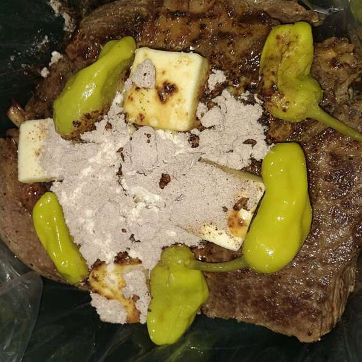

Mississippi Roast

Slow cooker roast recipe, also called Pepperoncini Roast. Serve with egg noodles or mashed.
Nutrition Facts
Per Serving: 537 calories; protein 36.5g; carbohydrates 5.8g; fat 39.3g; cholesterol 151.2mg; sodium 1479.1mg. Full Nutrition
Ingredients
- 1 (4 pound) beef chuck roast
- 1/4 cup butter
- 5 pepperoncini peppers
- 1 (1 ounce) packet ranch dressing mix
- 1 (1 ounce) packet dry au jus mix
Steps
- Place roast in a slow cooker. Form a pocket in the top of roast and place butter, pepperoncini peppers, ranch dressing mix, and au jus mix in the pocket.
- Cook on Low for 8 hours.